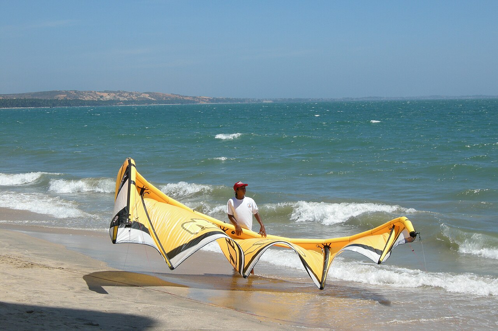
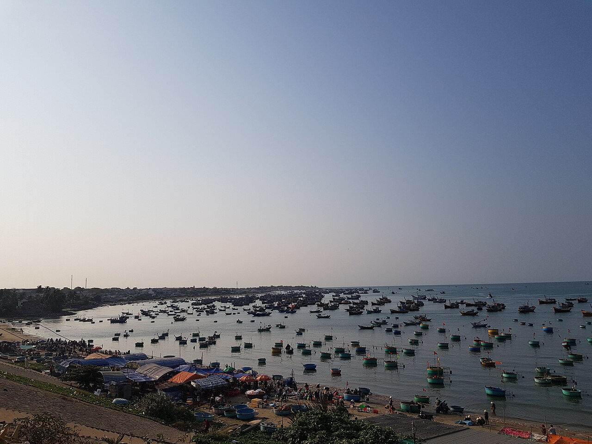
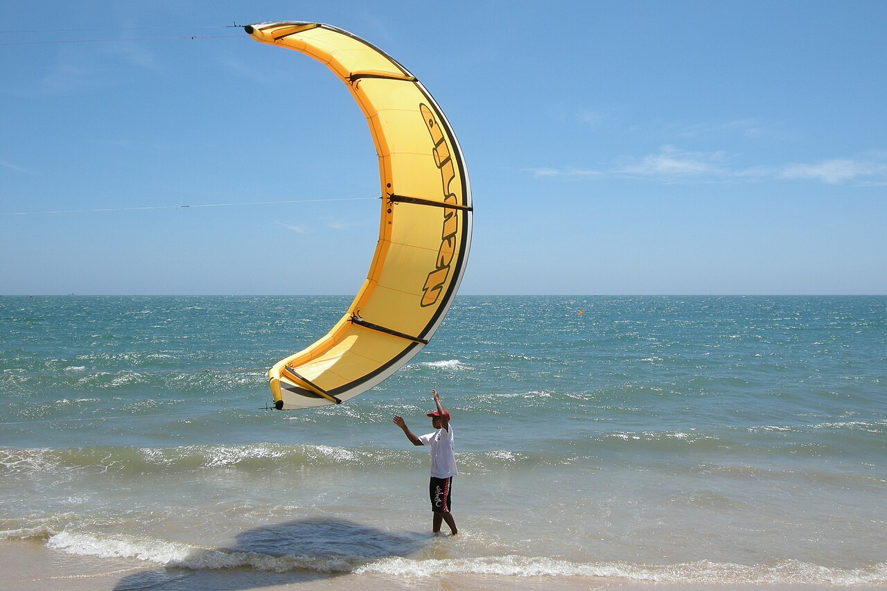

Хамтьен · Nguyễn Đình Chiểu
Основная курортная улица тянется вдоль побережья. Здесь расположены кафе, магазины и кайт-школы. Проверьте адрес выбранного жилья: улица длинная, поэтому пешая доступность зависит от конкретного места.
Дома, бунгало и небольшие отели для троих: пространство для отдыха и удобная база для поездок к кайт-спотам.
Для всех карточек необходимо проверить полный итог за 12 ночей для трёх взрослых, включая налоги и сборы. $720 — ваш предел, или $60 за ночь за всё жильё, а не найденный тариф. Ссылки пытаются передать даты и гостей; сайт может сбросить параметры.
Несколько ориентиров для выбора района и ежедневной дороги к воде.
Муйне в туристических описаниях — это протяжённое побережье, а не один компактный центр. Фотографии показывают район и кайт-пляж, не конкретные объекты из списка.



Основная курортная улица тянется вдоль побережья. Здесь расположены кафе, магазины и кайт-школы. Проверьте адрес выбранного жилья: улица длинная, поэтому пешая доступность зависит от конкретного места.
Рынок, местные кафе и лодки у берега; Moonbeam и NANG описывают расположение рядом с деревней. До выбранной школы может понадобиться мопед или такси.
Апартаменты Little Sunshine и Ocean Vista находятся в районе курортного комплекса. Уточните вход к пляжу, пеший маршрут к магазинам и дорогу до вашей школы.
Ориентиры: Mui Ne Kitesurf School, 42 Nguyễn Đình Chiểu и Jibe’s Kite School. Точку входа, маршрут и условия запуска согласуйте со школой.
Сначала проверьте Dứa, Moonbeam, Vy’s Home и NANG на две спальни; для отелей — наличие двух отдельных номеров.
Центральный Хамтьен; рядом кафе и пляж. Возможен уличный шум.
Бассейн; ближе к деревне Муйне, рынку и кафе. До некоторых кайт-школ потребуется поездка.
Номера на разных этажах, наружная лестница; кухня общая. Рынок и кафе рядом.
Проверьте конкретную категорию и размещение троих на весь срок.
На Booking есть апартаменты с двумя спальнями; пляж и магазины неподалёку по описанию хозяина.
149A Nguyễn Đình Chiểu. Сравните два отдельных номера; пляж рядом.
Тихая улица, рядом рестораны; проверить комбинацию из двух номеров.
В отзывах отмечают кафе и пляж неподалёку; проверить два номера.
Сад и бассейн; до пляжа несколько минут пешком по описанию Booking.
46 Huỳnh Thúc Kháng; сравните две единицы размещения и дорогу до школы.
Бассейн и сад; расположение и наличие двух подходящих номеров уточните на карте.
233A Nguyễn Đình Chiểu; проверьте два отдельных номера и доступ к пляжу.
Проверьте расположение относительно нужного кайт-спота и двух бунгало.
Отдельный дом для шести, две ванные. Проверить доступность и полный тариф.
В объявлении указана только одна кровать: до бронирования уточните спальные места и инфраструктуру.
201/4 Nguyễn Đình Chiểu; общая кухня, пляж и кафе рядом по описанию. Сравните два номера или бунгало.
Поблизости Ham Tien Beach и Bo Ke. Проверьте два номера и общую стоимость.
Рыбацкая деревня, кухня, две ванные; рынок, местные кафе и пляж рядом по объявлению.
Апартаменты в Sea Links; пляж рядом. Кафе пешком и доступ к бассейну уточните до бронирования.
Апартаменты с видом на море и бассейном; инфраструктуру вне комплекса и дорогу до спота проверьте.
91A Nguyễn Đình Chiểu, рядом кафе и рестораны. Уточните ванную в конкретной категории.
119 Nguyễn Đình Chiểu. Сравните два номера и место хранения снаряжения.
85 Huỳnh Thúc Kháng. Рассчитайте поездки до выбранной школы.
Холмистое расположение; проверьте удобство подъёма с кайт-снаряжением.
01 Nguyễn Đình Chiểu. Есть отдельные номера и общие комнаты; уточните наличие двух отдельных номеров.
Упоминался в прошлой беседе. Прямую карточку на Booking или Airbnb найти не удалось; ссылка ведёт на поиск, совпадение нужно проверить.